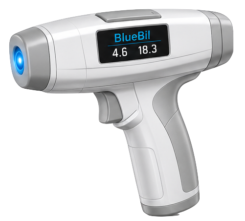
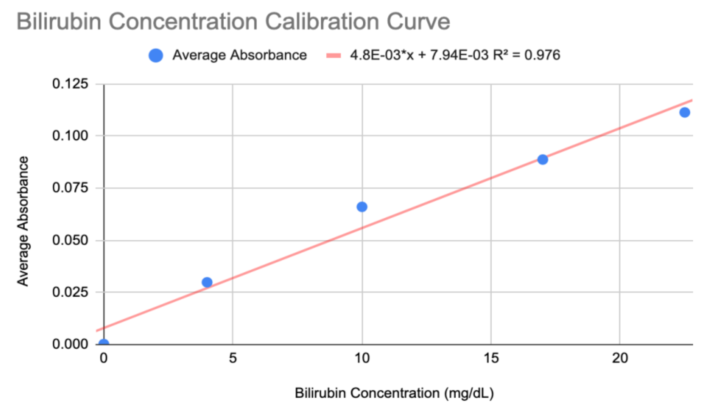
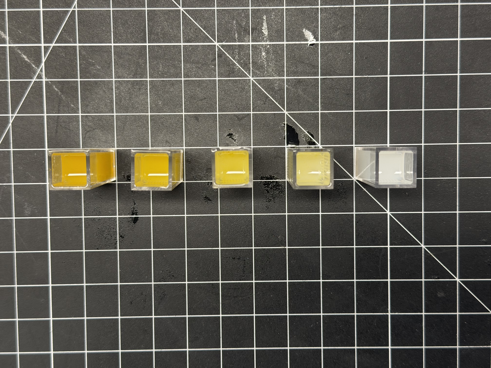

The Science
Multiwavelength scleral
reflectance spectroscopy
BlueBil exploits a fundamental truth: bilirubin absorbs blue light. By actively measuring that absorption in the ocular sclera — a tissue that yellows predictably regardless of skin tone — and correcting for hemoglobin and optical pathlength, we achieve robust, demographically equitable bilirubin quantification.
01 — Device Design
Every component designed with purpose
BlueBil integrates optical sensing, analog signal conditioning, embedded firmware, and clinical ergonomics into a single pistol-grip enclosure operable with one hand at the bedside. Hover or tap each component to learn more.

02 — Optical System
Why the sclera — and how we read it
Melanin, the pigment responsible for skin tone variation, is absent from scleral tissue. Bilirubin deposits uniformly in the sclera as serum levels rise — creating a predictable, measurable optical signal that behaves identically across all patients, regardless of race or skin tone. This is the core equity innovation of BlueBil.
Three-Channel Architecture
Each wavelength plays a distinct role
Blue — Bilirubin Signal
Bilirubin absorbs maximally near 470 nm. The blue channel is the primary measurement — absorbance at this wavelength is the core indicator of scleral bilirubin concentration. All exposures are maintained well below established ocular safety thresholds per IEC 62471.
Green — Hemoglobin Correction
Hemoglobin absorbs at wavelengths that overlap with the bilirubin-dominant blue channel. The green reference channel captures this vascular contribution, enabling a differential correction that isolates the bilirubin-specific signal from background hemoglobin absorption.
Infrared — Pathlength Control
Infrared reflectance is insensitive to tissue pigmentation but highly sensitive to probe-to-tissue distance. Two IR verification checks bracket every measurement, confirming consistent optical pathlength and flagging any positioning errors before a result is displayed.
Ratiometric multiwavelength estimation
The three channels work together in a ratiometric model. Rather than relying on a single absorbance value, the algorithm combines the differential signal across channels to isolate the bilirubin contribution from confounding variables.
03 — Firmware
A deterministic measurement sequence
The embedded firmware runs a deterministic multi-stage state machine triggered by a physical button press. Every measurement is bracketed by placement validation — a failed distance check returns the device to idle and prompts repositioning, preventing the device from ever silently producing a measurement at the wrong distance.
The firmware is organized into modular components handling configuration, sensor sequencing, signal processing, display output, and state machine logic independently — a separation of concerns that simplifies calibration updates and algorithm refinement without touching unrelated subsystems.
Design principle: No result is displayed unless the full validation sequence passes. Placement errors produce an explicit failure message — never a silent bad reading. This is deliberate clinical safety design.
Positioning
The IR channel pulses continuously. A live indicator on the OLED guides the clinician to the correct probe-to-eye distance. The device waits for a stable, validated placement before proceeding.
IR · continuousBlue Channel Measurement
The blue LED fires. Multiple ADC samples are averaged over the measurement window to reject transient noise. OLED displays "Measuring…" throughout.
470 nm · averagedIR Validation — Check 1
A brief IR pulse verifies probe placement has not drifted. If the distance check fails, the measurement is discarded and the device returns to idle with a repositioning prompt.
850 nm · pass / failGreen Channel Measurement
The green reference LED fires using the same multi-sample averaging protocol. This hemoglobin reference measurement is used in the ratiometric correction stage.
530 nm · averagedIR Validation — Check 2
A second IR distance check closes the measurement bracket. The mean of both IR readings is used in the pathlength correction calculation.
850 nm · averagedResult Display
Bilirubin concentration is calculated and displayed in mg/dL with a treatment recommendation. The result persists until the next trigger press initiates a new cycle.
Result · <3s total04 — Validation
Bench-top results
Five silicone hemisphere phantoms were doped with calibrated yellow pigment concentrations matched to published ocular bilirubin color reference cards using a laboratory spectrophotometer. Each phantom was measured five times to assess repeatability.


Known Limitations
What we know, and what comes next
Scientific honesty is core to how we operate. The current bench-top validation used simplified optical models — we acknowledge three key gaps and have a clear path to address each before clinical deployment.
Light Scattering
Silicone phantoms do not replicate the fibrous collagen microstructure of real scleral tissue, which influences how light scatters and penetrates. Next step: tissue-realistic scattering phantoms incorporating TiO₂ to better model scleral optical behavior.
Hemoglobin Interference
Current phantoms contain no vascular component, so the green channel correction has not yet been validated against real hemoglobin spectral contributions. Next step: vascularity phantoms with red-dye simulation and dual-wavelength calibration refinement.
Population Variability
Scleral thickness varies across the neonatal population and influences optical pathlength. Homogeneous phantoms cannot capture this inter-subject variability. Next step: paired TSB-BlueBil clinical measurements across a diverse neonatal population.
Regulatory Pathway
510(k) clearance via established predicate
BlueBil is intended as a non-invasive adjunctive screening tool — not an initial replacement for total serum bilirubin confirmation. We are pursuing FDA Class II clearance via 510(k) premarket notification.
Predicate Device
An established FDA-cleared transcutaneous bilirubinometer (Class II, device code IYO) provides substantial equivalence for intended use — non-invasive bilirubin estimation in neonates. The scleral measurement site strengthens the equivalence argument by addressing the predicate's documented limitations.
Photobiological Safety
IEC 62471 compliance is required for any eye-directed LED system. All BlueBil optical exposures are engineered and verified to remain well below established safety thresholds for both the blue and infrared channels.
Analytical Performance
510(k) submission will require demonstrated accuracy against total serum bilirubin across a diverse neonatal population. Clinical pilots are planned with domestic and international NICU partners, including Komfo Anokye Teaching Hospital in Kumasi, Ghana.
Pre-Submission Meeting
Given the ocular measurement site, we plan a Q-Sub pre-submission meeting with FDA's ophthalmic devices division following completion of our clinical pilot study, to clarify the review pathway and align on performance benchmarks.
Reimbursement Path
Neonatal bilirubin monitoring has established reimbursement precedent in US healthcare. Transcutaneous devices are already integrated into NICU billing workflows. BlueBil targets existing DRG bundle structures, with potential for a dedicated CPT code following FDA clearance.
Intellectual Property
We have engaged the University of Michigan Innovation Partnerships office for a formal prior art search and patentability assessment. The active multiwavelength scleral probe approach with integrated pathlength verification appears to represent a novel and non-obvious combination over existing prior art.